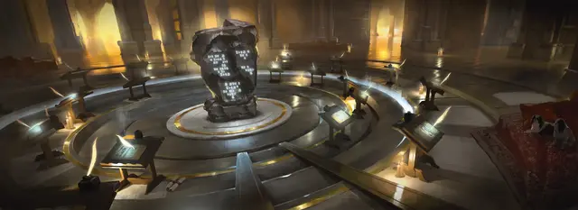

Писарь
Scribe

Характеристики Ловкость, Интеллект, Мудрость
Черта Одарённый
Навыки Восприятие, Расследование
Инструменты Инструменты каллиграфа
Снаряжение Выберите А или Б: (А) Инструменты каллиграфа, Отличная одежда, Лампа, Масло (3 фляги), Пергамент (12 листов), 23 ЗМ; или (Б) 50 ЗМ
Годы вашего становления прошли в скриптории, в государственном учреждении или в монастыре, посвященном сохранению знаний. Там вы научились писать чётким почерком, создавая тонко написанные тексты. Возможно, вы переписывали правительственные документы или копировали рукописные тома. Возможно, у вас есть некоторые навыки в написании поэзии, повествовании или научных исследованиях. Прежде всего вы уделяете внимание деталям, что помогает вам избегать ошибок в документах, которые вы копируете и создаёте.